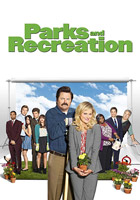

TV Shows


- The character "Penelope Garcia" was supposed to be in only one episode, but she tested so positively that she was added to the main cast.
-
- Matthew Gray Gubler does not wear matching socks, because he thinks it's unlucky. In a few of the episodes, you can see his mismatched socks.
-
- J.J.'s children are played by A.J. Cook's actual children, Mekhai Andersen and Phoenix Anderson. Thomas Gibson's son Travis Gibson appeared in an episode that he directed. Joe Mantegna's daughter Gia Mantegna made a few guest appearances.

- Andy was only supposed to appear as a guest in the first season, but everybody liked Chris Pratt so much, he was promoted to series regular for season two.
-
- Amy Poehler, afraid they were going to turn Leslie Knope into a "female Michael Scott," requested that starting in season 2, they show her character to be talented and successful at her job, with the humor coming from her quirky behavior and eager enthusiasm. The writers listened and went that route starting in season 2.
-
- Nick Offerman originally auditioned for the rule of Mark Brendanawicz before being cast as Ron Swanson.

- Alyson Hannigan and Charisma Carpenter appeared on Buffy the Vampire Slayer (1997). "Buffy" Creator Joss Whedon, a declared fan of this show, also had a cameo in an episode.
-
- The only characters that appeared in all of the episodes were Veronica (Kristen Bell) and Keith Mars (Enrico Colantoni).
-
- Paul Rudd was originally considered to play Vinnie Van Lowe.


"So anyways, let's get down to the nitty gritty."
~Nacho Libre